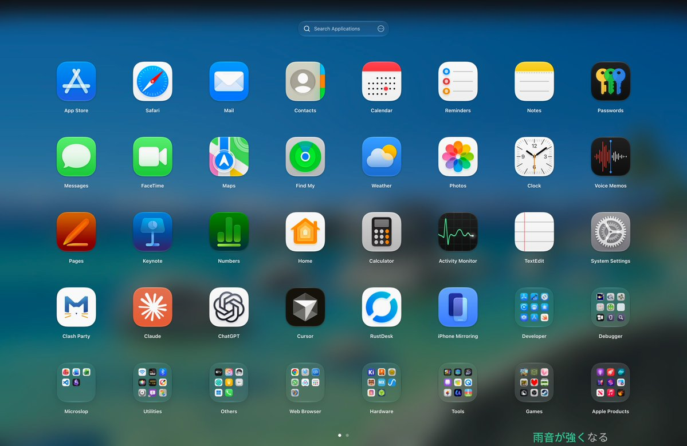
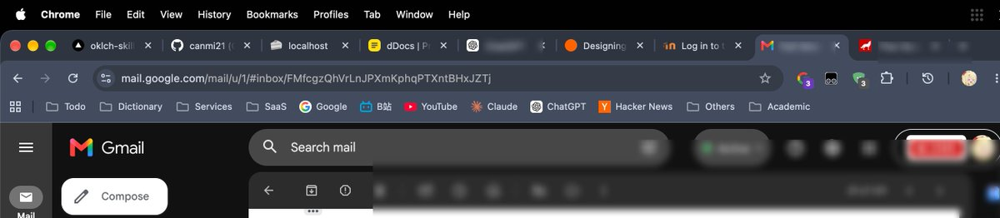
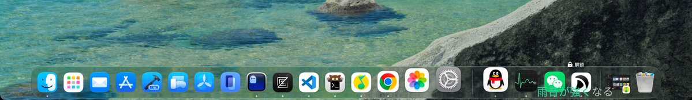

Wilf Lin
@Wilf_Lin
@canmi21 合理的，我linux也爱这么干，在老系统打好驱动然后直接硬盘克隆过去



Canmi
@canmi21
偷天换日了属于是，新系统但是用户数据被整块覆盖进来了，apfs 换的，文件元数据权限全部都恢复正确，新系统重装后直接认了 ssh key & sop，甚至开机自动启动的浏览器上一次的 tab 和 store 的 state 都没丢，软件激活也没丢，硬件没换，keychain 也自己解锁了，属于是真的骗过上帝了（ https://t.co/3OZ3Y1pmg7